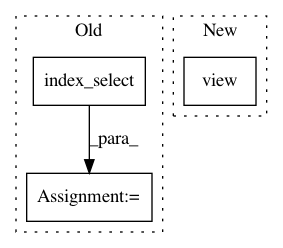

f01591a685be78db2c440e8024895601017a5b72,gpytorch/lazy/matmul_lazy_variable.py,MatmulLazyVariable,_get_indices,#MatmulLazyVariable#Any#Any#,71
Before Change
return (left_vals.view(-1, inner_size) * right_vals.view(-1, inner_size)).sum(-1)
def _get_indices(self, left_indices, right_indices):
res = self.lhs.index_select(-2, left_indices) * self.rhs.index_select(-1, right_indices).transpose(-1, -2)
return res.sum(-1)
def diag(self):
return (self.lhs * self.rhs.transpose(-1, -2)).sum(-1)
After Change
right_vals = self.lhs._get_indices(_inner_repeat(inner_indices, outer_size),
_outer_repeat(right_indices, inner_size))
return (left_vals.view(-1, inner_size) * right_vals.view(-1, inner_size)).sum(-1)
def diag(self):
if isinstance(self.lhs, NonLazyVariable) and isinstance(self.rhs, NonLazyVariable):
In pattern: SUPERPATTERN
Frequency: 3
Non-data size: 3
Instances
Project Name: cornellius-gp/gpytorch
Commit Name: f01591a685be78db2c440e8024895601017a5b72
Time: 2018-01-24
Author: gpleiss@gmail.com
File Name: gpytorch/lazy/matmul_lazy_variable.py
Class Name: MatmulLazyVariable
Method Name: _get_indices
Project Name: jwyang/faster-rcnn.pytorch
Commit Name: cd48957b671f2799c19578f73025da50dd100de5
Time: 2017-09-05
Author: jlu347@jarvis.cc.gatech.edu
File Name: lib/model/rpn/rpn.py
Class Name: _RPN
Method Name: forward
Project Name: cornellius-gp/gpytorch
Commit Name: 4c6458b841bb49610b5cf6b9fbab94df5cad85ee
Time: 2019-01-23
Author: gpleiss@gmail.com
File Name: gpytorch/lazy/interpolated_lazy_tensor.py
Class Name: InterpolatedLazyTensor
Method Name: _quad_form_derivative